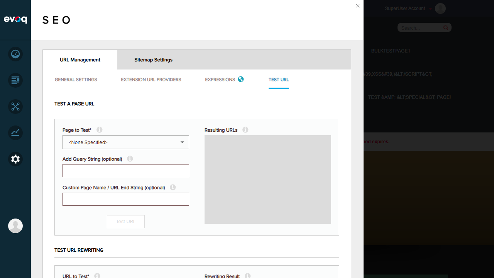

Extension: Evoq.PersonaBar.UrlManagement (PersonaBar Module)
Feature: URL Rewriting Testing
Description: Test and validate URL rewriting functionality with detailed results
UI Location: Admin > Persona Bar > Settings > SEO > URL Management > TEST URL
Test Date: January 6, 2026
Priority: Medium
Testing URL rewriting functionality with a valid page URL (http://localhost:8081/en-us/Home)
Testing URL rewriting with multiple query string parameters
Testing URL rewriting for pages with special characters (&, <, >) in their names
Testing URL rewriting with French locale (fr-FR) URLs
Testing how the URL rewriter handles non-existent pages
Testing error handling for invalid/malformed URLs
Overall Result: All tests passed successfully. The URL Rewriting Testing feature is functioning correctly.
Screenshot of the TEST URL interface showing both "TEST A PAGE URL" and "TEST URL REWRITING" sections:
